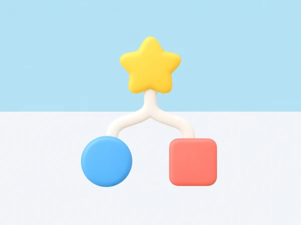

El joc dels condicionals: si... llavors... si no...
Practiqueu les decisions amb targetes inventades i representeu què passa quan una condició és certa o falsa.

🎯 Aprenentatges i vocabulari
Un programa pot comprovar una condició i triar què fa després. En aquesta activitat, l’alumnat interpreta una regla «si... llavors... si no...», prediu la resposta abans d’actuar i comprova què passa amb entrades diferents. Les dades són símbols inventats, no característiques personals.
🧰 Materials i preparació
- Targetes grans amb tres símbols: estrela, cercle i triangle. Es poden dibuixar o retallar.
- Una fitxa per equip i dues zones de resposta, una amb un cercle blau i una altra amb un quadrat coral.
- Targetes amb les regles, o pissarra per escriure-les en lletra gran.
- Una graella senzilla per registrar entrada, condició, decisió i resultat.
Rols de l’equip
Repartiu quatre rols i canvieu-los després de cada ronda:
- Qui proposa la regla llig la condició sense afegir pistes.
- Qui interpreta rep la targeta d’entrada i diu si la condició és certa o falsa.
- Qui executa col·loca una fitxa a la zona corresponent; també pot assenyalar-la si prefereix no moure’s.
- Qui observa registra la predicció i comprova si s’ha seguit la regla.
📅 Seqüència didàctica
Acordeu els símbols
Desenvolupament del pas
Mostreu les targetes i comproveu que tot el grup pot distingir l’estrela, el cercle i el triangle. Si el color també ajuda, manteniu forma i color perquè la regla no depenga només de percebre un to.
Proveu una condició senzilla
Desenvolupament del pas
Llegiu aquesta regla: si la targeta té una estrela, posa la fitxa al cercle blau. Presenteu una estrela, demaneu una predicció i executeu. Després proveu el cercle i el triangle. En aquests dos casos, la condició no s’acompleix; deixeu la fitxa quieta i parleu del que significa que no hi haja cap acció alternativa.
Afegiu «si no»
Desenvolupament del pas
Ara completeu la regla: si la targeta té una estrela, posa la fitxa al cercle blau; si no, posa-la al quadrat coral. Abans de mostrar el resultat, cada persona indica quina branca espera. Barregeu les targetes i feu diverses proves.
| Targeta d’entrada | «Té una estrela»? | Acció prevista |
|---|---|---|
| Estrela | Sí | Cercle blau |
| Cercle | No | Quadrat coral |
| Triangle | No | Quadrat coral |
Comproveu que l’opció «si no» cobreix tots els casos que no compleixen la condició, no només el cercle.
Canvieu la regla sense canviar les peces
Desenvolupament del pas
Una altra parella tria una condició que es puga verificar amb les targetes, com ara «la targeta és redona». Abans de provar, ha d’escriure les dues branques i comprovar que cada símbol té una resposta. Si dues persones interpreten la regla de manera diferent, feu-la més precisa.
Exploreu «i» i «o» (ampliació)
Desenvolupament del pas
Afegiu targetes amb dues propietats visibles —per exemple, forma i marc— i acordeu què vol dir cada propietat abans de combinar-les:
- I: s’han de complir les dues condicions. «Té estrela i marc blau».
- O: n’hi ha prou que se’n complisca una. «Té estrela o marc blau».
Feu servir primer dues targetes d’exemple per a cada combinació i anoteu quines entren a cada branca. No cal memoritzar una taula formal: l’objectiu és justificar la decisió a partir de la regla acordada.
🧪 Evidències i avaluació
Recolliu la regla escrita o enregistrada amb pictogrames, una predicció i els resultats de tres targetes. L’alumnat ha de poder explicar quina dada ha comprovat, per què ha triat aquella branca i què faria amb un exemple nou. Valoreu també que detecte una regla ambigua i propose una manera d’aclarir-la.
Preguntes per fer pensar
- Com podem comprovar que la condició és certa o falsa?
- Què passa amb el triangle si la regla només parla de l’estrela?
- Quina diferència hi ha entre deixar la fitxa quieta i definir una acció «si no»?
- En la regla amb i, què passa si només una de les dues propietats coincideix? I amb o?
♿ Participació, accessibilitat i seguretat
Manteniu les targetes visibles i llegiu la regla en veu alta. Oferiu símbols grans d’alt contrast i permeteu respondre parlant, assenyalant, mirant la zona triada o col·locant una fitxa. El moviment corporal és opcional i es pot fer des de la cadira. Comenceu amb dues formes i una sola condició; afegiu una tercera forma quan el grup ja puga explicar les dues branques.
🔗 Referents i adaptació
El curs de Makeblock Codey Rocky & Neuron Discovery inclou activitats desendollades per introduir conceptes abans de programar. Aquest joc i els seus materials són propis, no requereixen cap robot ni el mòdul Neuron.